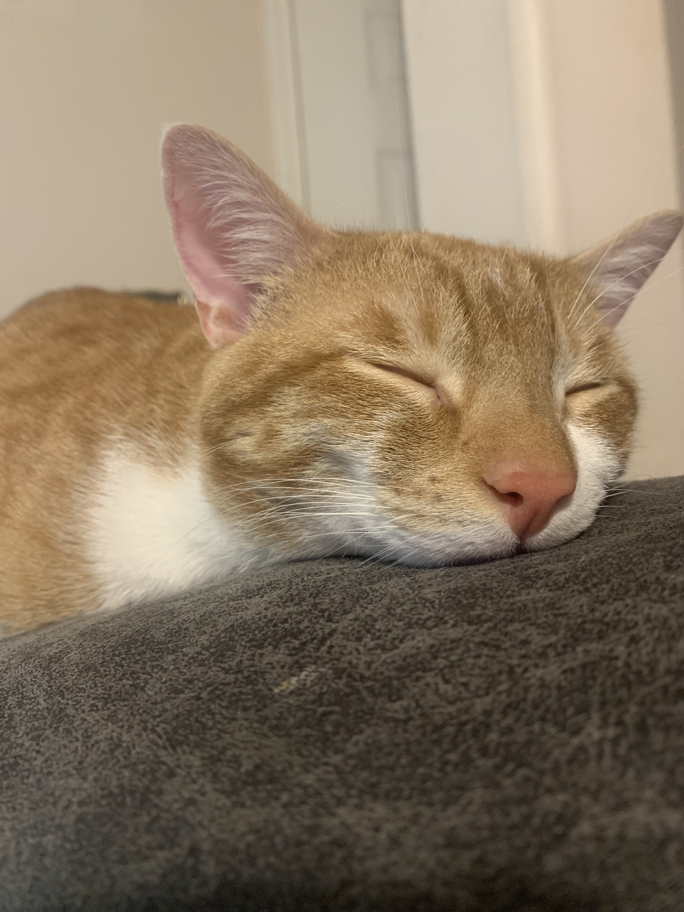
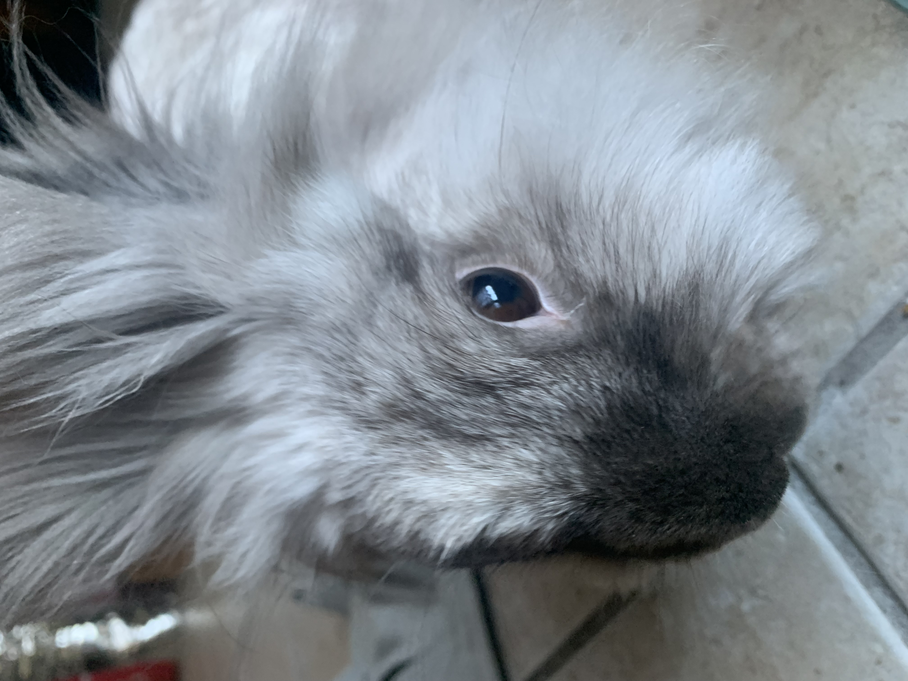

Welcome To My Site

Hi I am Jacob, I am a 19 year old person who has alot of weird interest and hobbies. I enjoy alot of creative interests such as making music, art, and photography. Almost all of my life I've lived in a small town in the south, and grew connected to the nature that surronded it. This lead me to having alot of insperations for my hobbies and allowed me to keep up with them. I took band in middle and high school, sang in a large choir, and I play piano for my father's church. Now you may be wondering why im here for coding. In highschool they offered a coding course, so I thought I would give it a try. I liked it and found that I had the same creative passion for coding. I took more courses that they offered for it. Which lead me to this since I wanted to learn more about the world of coding.
Like previously mentioned, I'm a creatively minded person. I've done alot of music related things in my city, and try to be active with the music scene here aswell. With the interest of keeping in with music, I've decided to get into music production. Which in turn allows me to have my world of tech and music collide. Besides music and tech, I enjoy cooking. Cooking has been near to me and helps me connect to my family alot more.
One thing that has always been near to me is my animals. All of my life I've had pets which have made me into who I am today. None so more as the pets I have right now. Ichigo(left) is one my cats that is a very dumb but loveable cat. He has typical orange cat behavior, but is really sweet. Rukia(right) is the sister to Ichigo and fairly different personality wise. She is a playful and energtic cat. She really is a handful ,but I love her none the less. Marshmallo(bottom) She runs the roost, and is the oldest aanimal I have. She is currently 6 and still is living her best life. She is a very caring and gentle animal but demands repsect. She has befriended my cats and really has impacted all of us.
 